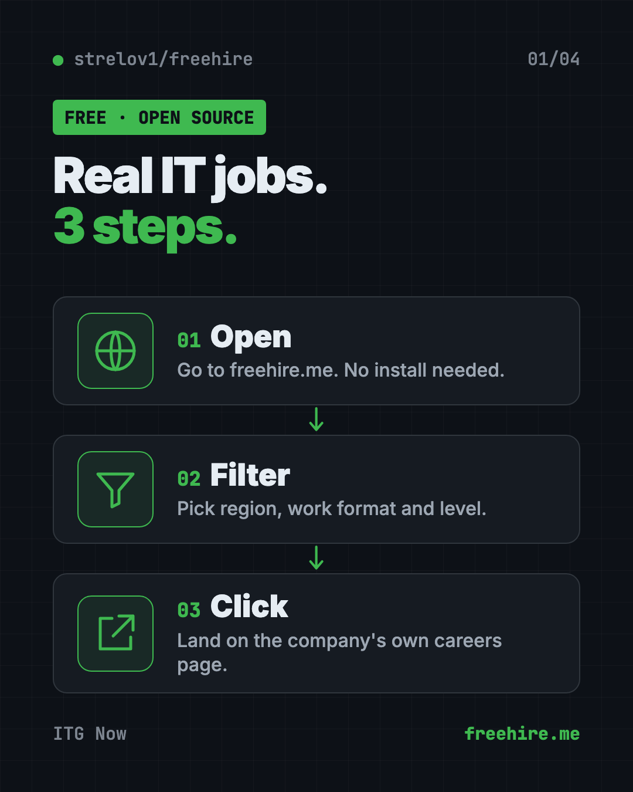
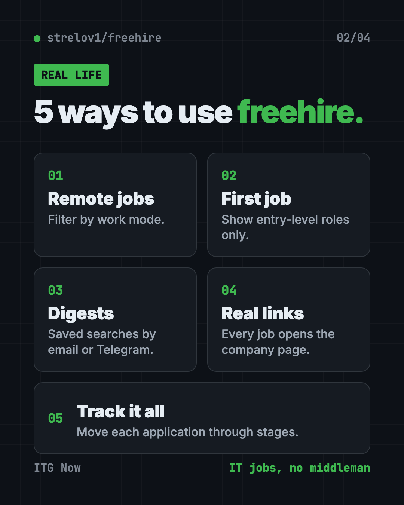
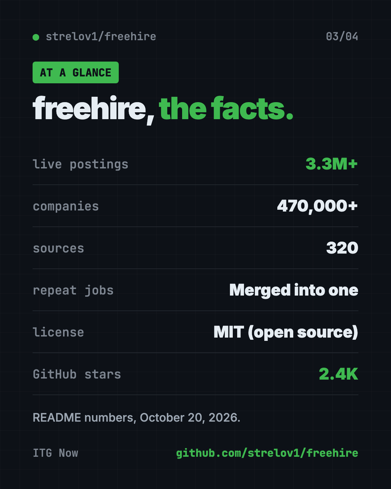
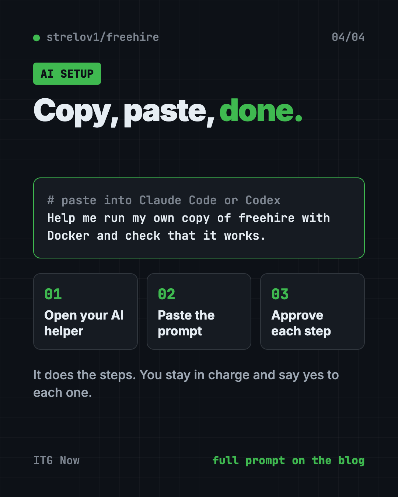

freehire: Free IT Job Search Straight From the Source (2026)
- Published 15 Oct 2026
- Updated 22 Oct 2026
- 8 min read
- License MIT
- By the ITG Now team
In this guide (14)
- Key takeaways
- What is freehire?
- How does freehire work?
- How to use freehire (real examples)
- Is freehire free?
- freehire at a glance
- Who should use freehire?
- What else does freehire do?
- How to use freehire on the web
- How to install freehire on your own computer
- Let Claude or Codex set it up for you
- What are freehire's limits?
- Our take
- FAQ
freehire is a free IT job search site that pulls openings straight from company career pages. Every listing links to the real posting on the company's own site, so you skip recruiter reposts and dead links.
We'll show you how to use it for a real job hunt and what it costs. Then, if you're techie, how to run your own copy.
Key takeaways
- Straight from the source. Jobs come from the hiring systems companies use for their own career pages.
- Huge catalog. The README counts 3.3M+ live postings from 470,000+ companies.
- No repeats. The same job posted on three boards shows up once.
- Open source. The code is public under the MIT license, and you can run your own copy.
- More than search. A CV builder, an application tracker and a Chrome extension sit on top of the same data.

What is freehire?
freehire is a job search engine for IT jobs. Its README sums it up as "Every IT job, straight from the source."
Here's the idea. Most companies post jobs through a hiring system, like Workday, Greenhouse or Lever. freehire reads those systems directly. So what you're looking at is the job the company itself posted. Not a copy on a middleman's site, where it may have sat for weeks after the role was filled.
It's made by developer strelov1 and shared on GitHub, where it has about 2.4K stars. Stars are like bookmarks. People are paying attention.
How does freehire work?
The README gives the big numbers as of October 20, 2026:
- It collects jobs from 320 sources. That includes 124 hiring platforms, job boards and 97 Telegram channels.
- It cleans every job into one shape and removes repeats. A job reposted across boards is counted once.
- It sorts each job by region, work mode, seniority, skills and salary. The README says these come from set word lists, "never guessed."
- It links each listing back to the original posting, so you apply on the company's own page.
There's also a "ghost-job signal." It's a check behind the question you've probably asked yourself: "is this job real?"
How to use freehire (real examples)
- Find remote work. Filter by work mode, pick remote, and skim only jobs you can do from home.
- Hunt your first job. Students can filter by seniority and look at entry-level roles only.
- Watch for new openings. Save a search and get a digest by email or Telegram.
- Skip the fake listings. Every result opens the real company page, so you know the job came from the company.
- Track your applications. Use the application board to move each job through stages, with reminders.

👉 Tip: Set up one saved search for your dream role. Let the digest come to you instead of checking every day.
Is freehire free?
The code is free. It's open source under the MIT license, and you can run your own copy at no cost to you.
The public job API needs no key or account. The README doesn't list any prices for the hosted site. It does say some AI features "draw on AI credits." So don't count on every extra being free.
freehire at a glance
| Price | Free code (MIT); some AI features use credits |
| Works offline | No, it's a website (you can host your own copy) |
| Platforms | Website, Chrome extension, self-host with Docker |
| License | MIT (open source) |
| Live postings | 3.3M+ from 470,000+ companies |
| Sources | 320, including 124 hiring platforms |
| Best for | Anyone hunting for an IT job who's tired of reposts |
Who should use freehire?
- IT job seekers who want every opening in one place.
- Students and new grads looking for a first role.
- Remote workers who need to filter by work mode.
- Career switchers checking what skills jobs ask for.
- Developers who want a free job API or their own copy.
It covers IT jobs. If you're a nurse or a chef, look elsewhere.
What else does freehire do?
The README calls finding the posting "half the problem." So there are tools for the other half:
- A CV builder with templates made to pass hiring software, plus scoring of your CV against a job.
- CV tailoring that, in the README's words, "invents nothing."
- A mail inbox that links a recruiter's reply to the job you applied for.
- An AI helper with modes for chat, browsing, your profile, CV tailoring and interview practice.
- A Chrome extension that opens next to a job page, shows how your skills match, and can fill in the application form for you.

How to use freehire on the web
You don't need to install anything to search. Really.
- Open freehire.me in your browser.
- Pick your filters, like region, work format, specialization and seniority.
- Click a job to go straight to the company's own careers page.
Want the side panel helper? You'll find the freehire extension in the Chrome Web Store. The link's in the README.
How to install freehire on your own computer
This part's for techie readers who want their own copy. You'll need Docker, a free app that runs software in sealed boxes.
First, download the code. Copy and paste this:
git clone https://github.com/strelov1/freehire.git
cd freehire
Then build and start everything. Copy and paste this:
make up
Check that it's running. Copy and paste this:
curl localhost:8080/health
curl localhost:8080/api/v1/jobs
If port 8080 is already taken, copy and paste this:
HIRE_HOST_PORT=8090 make up
For local work, the README says to copy .env.example to .env. JWT_SECRET must be set for the server to start. Sign-in and AI settings are optional, and the features they need stay off until you add them.
⚠️ Heads up: A fresh copy starts empty. Jobs come from separate "worker" programs, like
go run ./cmd/ingest greenhouse, that you run on a schedule.
Let Claude or Codex set it up for you
Claude Code and OpenAI Codex are AI helpers that can run setup steps on your computer for you. You paste a request, it does the steps, and you approve each one.
Copy and paste this:
Please help me run my own copy of freehire, the open source job search engine.
1. Check that Docker is installed on my computer. If not, tell me how to get it.
2. Download the code from github.com/strelov1/freehire.
3. Copy .env.example to .env and help me set JWT_SECRET.
4. Run "make up" and check that localhost:8080/health answers.
5. Tell me what each step does before you run it.
Then try asking:
Read the freehire README and show me how to fill my copy with jobs from one source.
Use the public freehire API to find remote junior jobs and list the first ten.
Explain how the freehire MCP server works with Claude Code, step by step.

👉 Tip: Only say yes to steps you understand. If something looks odd, ask the AI helper "what does this do?" first.
What are freehire's limits?
- IT jobs only. It's built for tech roles.
- Some features need AI. The README says some tools need an AI service set up, and some use AI credits.
- Self-hosting is a big job. Your copy runs a database, a search engine and more. You'll fill it with jobs yourself.
- It's young. The project went up on GitHub in June 2026, so expect changes.
Our take
freehire fixes a real pain. You've seen it: job sites full of reposts and listings that lead nowhere. Sending you to the company's own page is a simple, smart fix, and we think it's the right one.
What we like:
- Jobs come from the source, with a link to the real posting.
- Repeats are merged, so your list is shorter and cleaner.
- Strong filters, including work mode, seniority and salary.
- Fully open source, with a free public API.
- Extras like digests and an application board.
What to watch for:
- Only IT jobs.
- Prices for AI credits aren't in the README.
- Running your own copy takes real tech skills.
Want AI to tailor your CV too? Read our Career-Ops guide or try AI Job Search for tailored CVs.
FAQ
Is freehire free to use?
The code is free and open source under the MIT license. The public job API needs no key, but some AI features use credits.
Where do freehire's jobs come from?
They come straight from companies' own hiring systems, like Workday, Greenhouse and Lever. Job boards and 97 Telegram channels add more.
How many jobs does freehire have?
The README counts 3.3M+ live postings from 470,000+ companies across 320 sources, as of October 20, 2026.
Does freehire show the same job twice?
No. A job posted on several boards is merged into one entry.
Can I run freehire myself?
Yes. It's self-hostable with Docker. Run make up from the code folder to start it.
Is there a freehire browser extension?
Yes. A Chrome extension opens in a side panel next to a job page. It can show your skill match and fill in the form.
Get freehire: github.com/strelov1/freehire
Latest AI news
- Meta gives away its big Muse Spark AI for free
- Anthropic's legal tech push hits a reality check
- Microsoft says China-state group used AI hacking tool
- Tesla, Nvidia reportedly back $2.8B Samsung AI chip plant
Keep reading

VoiceStudio: Free ElevenLabs Alternative
VoiceStudio is a free ElevenLabs alternative. Clone a voice, dub videos and turn text into speech on your own Mac, Windows or Linux computer.